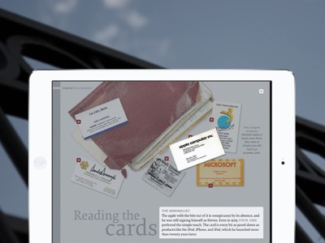

Seit der 18. Ausgabe des Magazins unterstützen wir gemeinsam mit TwoType und Axel Springer Neue Geschäftsfelder die Konzeption und Entwicklung des Magazins. Wir sind für die reibungslose Produktion der Folios und die Entwicklung der HTML-Inhalte verantwortlich.
Als besonderes Feature enthielt die 18. Ausgabe einen mit dem Gyrosensor des iPads gesteuerten Boomerang, den Leser erfolgreich auf dem Cover landen müssen. Das think:act Magazin nutzt regelmäßig sämtliche Features der DPS, um Zusatzinformationen der Geschichten ansprechend und benutzerfreundlich darzustellen. Überall dort, wo die Adobe Digital Publishing Suite Einschränkungen hat, erweitern wir die Funktionalität mit HTML5 – zum Beispiel für interaktive Visitenkarten, Animationen oder Mini-Applikationen.
Laden Sie sich die think:act über den Roland Berger Kiosk jetzt im App Store oder bei Google Play herunter:
{% include badge.html store="apple" %} {% include badge.html store="google" %}
{% for cta in site.ctas %} {% if cta.lang == page.lang %} {% if cta.id == 'about-project' %} {% include cta-plain.html %} {% endif %} {% endif %} {% endfor %}